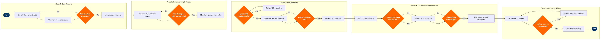

| Step | L4 Step Name | KPI / Target | Pain Point / Risk | Gate |
|---|---|---|---|---|
| 1.1 | Extract channel cost data from PSS and finance | Cost extraction completeness ≥99% of bookings reconciled per period | Sabre, Travelport, and Amadeus each use different invoice formats and fee codes; reconciliation against Altéa PSS PNRs requires manual mapping that introduces errors in ~2–3% of bookings | |
| 1.2 | Allocate GDS booking fees to route and O&D level | GDS cost per booking reconciled within ±$0.05 vs. invoiced totals | Altéa PSS booking records must be joined to SAP cost data at different granularities; PNR format mismatches between GDS sources and PSS cause join failures requiring manual resolution | |
| 1.3 | Validate and approve cost allocation baseline | Baseline approved and published within 5 business days of period close | Disputed cost allocations between Finance and Commercial teams delay sign-off; no single P&L owner for distribution costs creates accountability gaps that slow the optimization cycle | ⚠ |
| 2.1 | Benchmark distribution cost vs. industry peers | Distribution cost per booking target ≤$11.00 (vs. IATA industry average of $14–18) | Industry peer benchmarks are self-reported and often exclude hidden indirect costs such as agency incentive overrides; benchmarking accuracy is limited and results may misstate true competitive position | |
| 2.2 | Set channel-specific cost reduction targets | Target: 15% reduction in blended distribution cost per booking year-on-year | Commercial teams may resist aggressive NDC shift targets when GDS volume is contractually linked to incentive tiers or corporate travel agreements that cannot be restructured mid-year | ⚠ |
| 2.3 | Identify high-cost booking segments and routes | Top-20% high-cost routes identified and validated within 3 business days of baseline approval | High-yield corporate routes are typically the highest GDS-cost segments; reducing GDS dependency on these routes risks losing managed travel bookings routed through Sabre PRISM by TMC partners | |
| 3.1 | Assess NDC API capability and agency readiness | ≥60% of top-50 agencies NDC-certified within 6 months of programme launch | Mid-market agencies lack NDC-capable booking tools; OBTs such as SAP Concur require separate NDC plug-ins with additional integration fees, creating adoption friction outside the top-10 agency pool | ⚠ |
| 3.2 | Design NDC incentive and GDS surcharge structure | NDC incentive cost per shifted booking ≤50% of the GDS fee saving on the same booking | ATPCO filing of channel-differentiated pricing is restricted by fare parity clauses in certain GDS full-content agreements and by regulatory price-parity rules in EU and select APAC markets; legal review adds 4–6 weeks per market | |
| 3.3 | Negotiate NDC adoption agreements with top agencies | NDC adoption agreements signed with agencies covering ≥40% of total indirect booking volume | Large TMCs (BCD Travel, CWT, Amex GBT) negotiate distribution terms as blocs; failure to reach agreement risks losing the entire managed travel segment, which may represent 25–35% of revenue on key business routes | ⚠ |
| 3.4 | Activate NDC channel and monitor booking shift | NDC share of indirect bookings ≥20% within 12 months of channel activation | NDC API stability issues — including rate limit breaches, error code ambiguity, and mid-session session token failures — cause booking failures that agents attribute to the airline, risking channel abandonment and reversion to GDS | |
| 4.1 | Audit GDS full-content agreement compliance | GDS contract compliance rate ≥98%; zero penalty clauses triggered | GDS full-content clauses require all published fares to be available in GDS, creating direct tension with NDC-exclusive offer strategies; legal interpretation of content parity varies by GDS provider and jurisdiction, increasing compliance risk | ⚠ |
| 4.2 | Renegotiate GDS booking fee and incentive terms | GDS booking fee reduction ≥10% vs. current contracted rate across all three GDS providers | Sabre, Travelport, and Amadeus maintain strong negotiating leverage; airlines with less than 5% regional GDS market share have limited bargaining power, and fee concessions often require multi-year volume commitments that constrain future NDC migration | ⚠ |
| 4.3 | Restructure agency override commission schedule | Agency incentive cost as % of total revenue ≤2.5% (down from industry average ~3.5%) | Legacy override commission structures in Sabre PRISM are deeply embedded in agency workflows; unilateral reductions risk booking withdrawal by top-producing agencies during the renegotiation window, creating a short-term revenue gap | |
| 5.1 | Track blended distribution cost per booking weekly | Blended distribution cost per booking ≤$11.50; dashboard published within T+2 business days of week close | Weekly GDS invoice data from Sabre, Travelport, and Amadeus arrives on different billing cycles (weekly, bi-weekly, monthly), creating inconsistent data availability and lag in blended cost visibility | |
| 5.2 | Identify cost leakage and wrong-channel bookings | Cost leakage identified and escalated within 5 business days; leakage <2% of total distribution cost | Wrong-channel bookings — NDC-enrolled agencies reverting to GDS — are difficult to detect without real-time PNR source tracking; Altéa PSS booking source flags are inconsistently populated by some GDS-connected OBTs | ⚠ |
| 5.3 | Report cost performance to leadership and plan next cycle | Monthly report delivered within 5 business days of period close; YoY cost reduction trajectory on track vs. 15% annual target | Executive reporting requires attribution of cost changes to specific initiatives (NDC shift, GDS renegotiation, incentive restructure), but the multi-year lag in GDS contract cycles and NDC adoption curves makes causal attribution difficult without a controlled test-and-learn design |